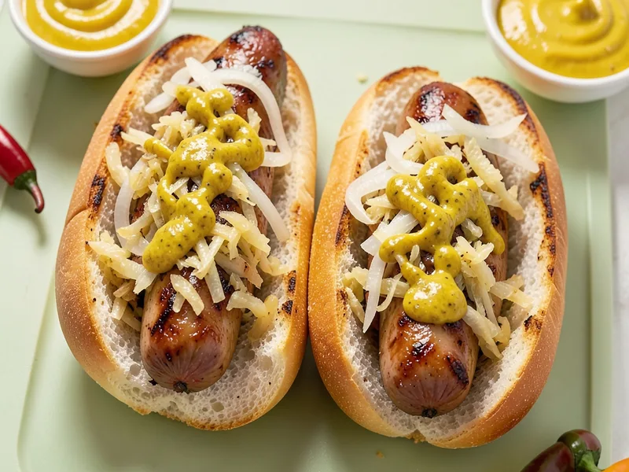

Bratwursts simmered in a sweet and savory beer bath with onions and dark brown sugar, then served in toasted buns with sauerkraut, mustard, and sliced onions.
Estimated from USDA data; assumes 8 brats with buns and part of the beer and sugar absorbed · Per serving (based on 8 servings)
Brats lose some moisture and fat during simmering while absorbing some beer and sugar, for a net weight loss of roughly 15%.
By Matthew
← All Recipes